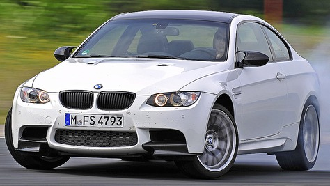

Honestly, I can't get over how much I love the E92 M3. There's just something about that car that grabs my attention every time. The V8 engine sounds incredible, and it gives off this raw, powerful vibe that's hard to find in newer models. The design is sleek and timeless, making it stand out even today.
The handling is so precise, and it feels like the car becomes an extension of yourself. It's not just about speed; it's about the connection you feel when you're behind the wheel. I genuinely think the E92 M3 is one of the best cars BMW has ever made, and I could talk about it for hours.
Absolute Image:

Relative image:
Unordered list:
Ordered list:
Learn more about the very questionable company "Bayerische Motoren Werke" BMW Website.
Feel free to contact me for more information.